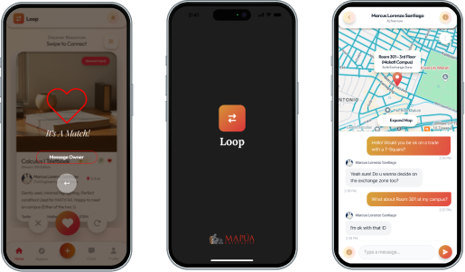
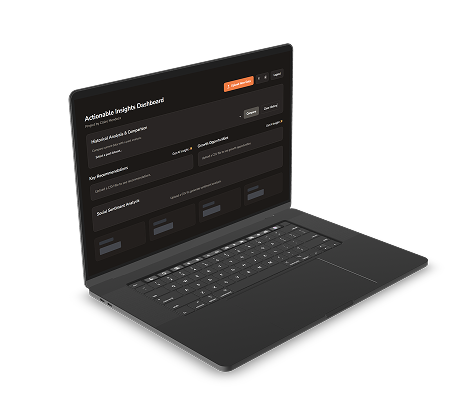

Tyche Nails - UI/UX, Admin
Dashboard Portal and Mobile App
Tyche Nails
Designed and engineered an end-to-end salon management ecosystem. Built a consumer-facing mobile app for seamless client booking, powered by a data-rich admin web dashboard for staff governance and AI-driven no-show predictions.

01 The Context: Digitizing a Manual System
[Problem Statement]
After conducting direct interviews with the salon owner, I identified severe operational bottlenecks caused by their manual workflow:
- Uncentralized Bookings: Appointments were scattered across Instagram DMs, Messenger, and Apple Notes, leading to double-bookings and missed clients.
- No Data Governance: Staff could not track returning clients, loyalty metrics, or daily revenue without manual tallying.
- Inefficient Scheduling: Complex services (e.g., 3-hour nail extensions) were difficult to map manually across only two staff members.
Dual-Sided Solution:
Instead of a generic plug-and-play app, I proposed a custom, two-part ecosystem tailored to their specific service durations and staff limitations:
- Phase 1 (Enterprise UX): A secure Admin Dashboard to centralize scheduling, client histories, and business analytics.
- Phase 2 (Consumer UX): A frictionless Client Booking Portal to eliminate the "DM-to-book" friction.
02 Systems Architecture & UX Strategy
The vision was to design a comprehensive, web-based dashboard system that would serve as a centralized hub for Tyche Nails. The proposed solution replaces manual methods with an integrated digital tool, empowering the team to optimize their workflow, enhance client service, and make data-driven decisions.
Sketch
Wireframes
Figma
Wireframes
Polished
UI Screen
System Diagram
To define the user's journey,
I mapped out the key steps
of the entire system's architecture to
understand all possible user actions., such as
creating and confirming a new client booking.
This ensured the final design was logical and
intuitive.

User Flow Diagram
Key UX Decisions:
- The "Firewall" Approach: To prevent schedule chaos, client bookings do not automatically confirm. They enter a "Pending Inbox" on the Admin Dashboard, allowing staff to manually vet and approve complex service requests.
- Progressive Disclosure: For the client app, I broke the booking process into a step-by-step wizard to prevent cognitive overload, ensuring service selection, time selection, and contact details were handled sequentially.

Core User Flow: Creating
a New Booking
To ensure a seamless user experience, I mapped out the core user flow for the most critical task: creating and confirming a new client booking. This process of defining the "happy path" was essential in structuring the final UI and ensuring the user's journey through the application was logical and intuitive from start to finish.
Sketch
Wireframes
Figma
Wireframes
Polished
UI Screen


03 UI Design & Visual System
The goal was a modern, aesthetic, and frictionless booking flow.
- Visual Hierarchy: Used high-contrast typography and clear "Available" vs. "Disabled" states for time slots to guide the user seamlessly.
- Bot Mitigation (R-G-4): Integrated a CAPTCHA step before submission to protect the salon's backend from spam requests.
Sketch
Wireframes
Figma
Wireframes
Polished
UI Screen
Mobile App (User Side)

Admin Dashboard (Management Side)
Designing for internal operations requires prioritizing data density and clarity over flashy visuals.
- KPI Visualization: Designed a high-level overview displaying real-time Revenue, Pending Bookings, and Service Breakdowns using clear data visualization components.
- Status Management: Created an intuitive "Inbox" UI for staff to easily Approve, Reject, or Reassign (R-M-3) bookings with a single click.
04 Engineering & QA
From Figma to Node.js
Because I acted as both designer and developer, the design-to-code handoff was seamless. I engineered the front-end using HTML/CSS and Vanilla JS (ES6+), utilizing a simulated Node.js/Express backend to mimic real API endpoint behavior.
Quality Assurance (UAT)
Great design fails without rigorous testing. Me and my members managed the User Acceptance Testing (UAT) phase, logging over 18 specific test cases across both the Guest and Management environments.
- Testing Edge Cases (R-G-3): Validated system responses for concurrent booking attempts to prevent slot collisions.
- Device Compatibility (R-G-6): Conducted responsive layout testing across standard mobile and tablet viewports to ensure the CSS media queries behaved perfectly.

05 Impact & Reflection
The Tyche Nails system successfully digitized a completely manual business. By replacing scattered DMs with a structured ecosystem, the platform eliminated scheduling conflicts, provided instant financial visibility, and created a professional, automated booking experience for clients.
What I Learned
Designing complex data tables and analytics dashboards in Figma is straightforward, but translating those responsive, data-heavy layouts into functional CSS requires strict adherence to grid systems and flexbox.
Next Steps
In a production environment, I would migrate the simulated in-memory Node.js database to a persistent cloud solution like PostgreSQL or Firebase to handle long-term data scaling.
Thank You For Stopping By!
Feel free to leave any thoughts :)
Email: mendozaclaireantonette791@gmail.com
LinkedIn: Claire Antonette Mendoza
Keep Exploring!

Project AGOS
Resource Mapping & Workflow
A digital workflow application designed to map vital resources and translate complex user journeys into an accessible interface.

Loop
HCI Final Project: Mapua Exchange App
An interactive campus exchange application utilizing core Human-Computer Interaction principles to foster community engagement.

Cocopan Insights
SME Business Intelligence
A comprehensive business intelligence dashboard transforming raw datasets into actionable visualizations.